Tutoriais
1 - Inscrevendo a Escola / Aluno em uma prova
Assim que entrar no sistema, selecione:- A escola que deseja inscrever clicando no ícone da coluna correspondente a escola ou os alunos da escola que deseja inscrever clicando no ícone da coluna correspondente ao aluno.
- Selecione o Icone 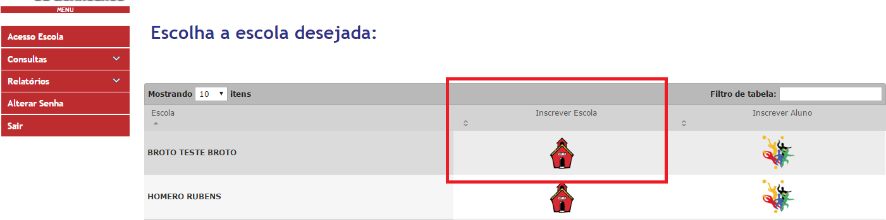
- Após selecionar a escola, aparecerá a tela para inserção da escola nas respectivas Modalidades e Provas.
- Selecione o professor responsável pela prava que deseja se inscrever, em seguida clique no icone de inscrição.

- Selecione o Icone 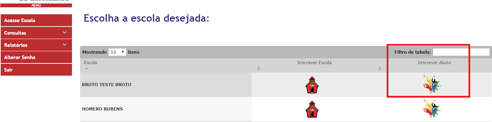
- Após selecionar os alunos, aparecerá a tela para a inserção dos alunos nas respectivas Modalidades e Provas.
- Clique no icone de inscrição de acordo com a Modalidade e Prova que deseja inscrever o aluno 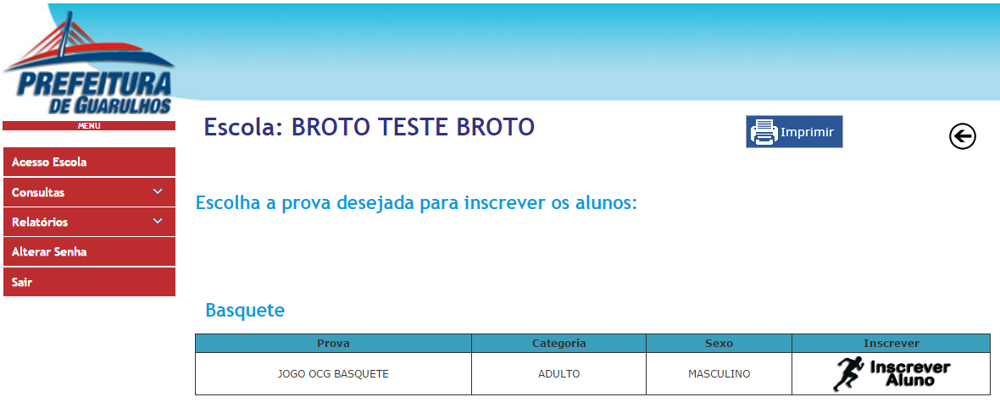
-
Logo após, irá visualizar a tela abaixo. Clique no icone de Ação (inscrever) ao lado do nome do aluno para efetuar a inscrição.
Obs: O número de inscrições são limitadas de acordo com a modalidade.
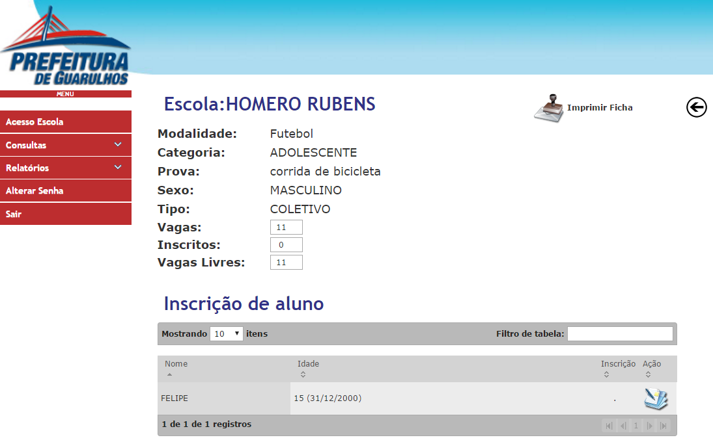
2 - Travar Inscrição
- Selecione dentro da aba Consulta a opção TRAVA INSCRIÇÃO. Essa trava só estara disponível para o perfil de Gestor.
- Poderá travar a inscrição, exclusão e edição, tanto de escolas quanto a de alunos.
- Clique na opção que deseja travar ou liberar para os usuarios do sistema
-
Icones com o cadeado fechado - > Travado
Icones com o cadeado aberto - > Liberado

3 - Gerar Tabela / Sumula
- Selecione dentro da aba Consulta a opção GERAR TABELA.
- Estarão listadas todas as provas com suas repectivas modalidades. Clique no icone da tabela para gerar a tabela da prova escolhida. 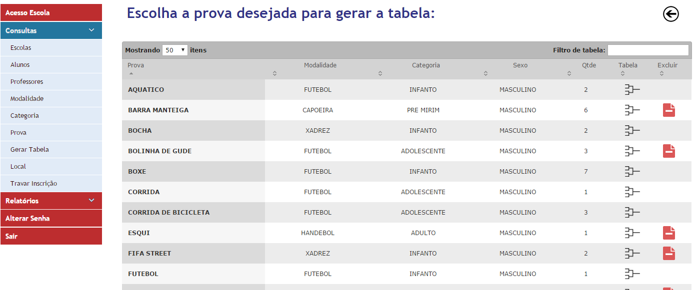
-
Após selecionar a prova que quer gerar a tabela, aparecerá a tela abaixo. Nela você irá visualizar a chave montada de acordo com a quantidade e nome das equipes participantes.
Digite o resultado do jogo campo estabelacido a cada equipe. Em seguida clique em GRAVAR.
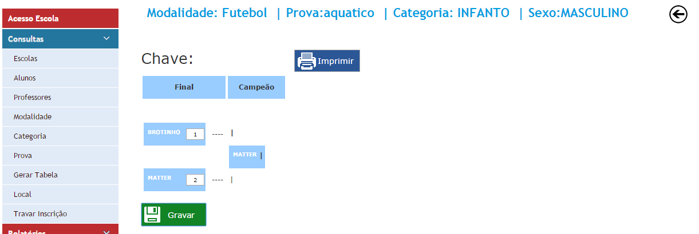 -
O quadro de Resultado aparecerá abaixo das CHAVES.
Todos os resultados das chaves serão carregados e ao lado de cada um tera um link a SUMULA. Basta clicar no link para gerar a Sumula.
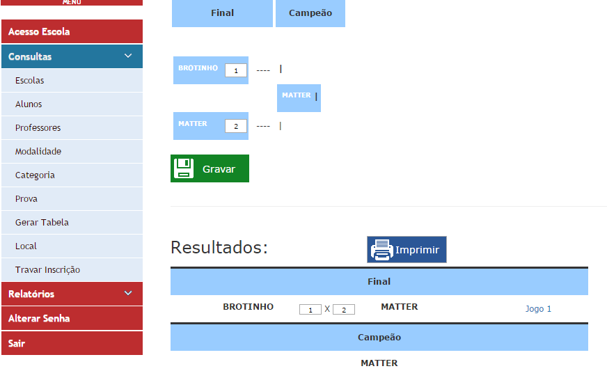
-
Na tela de SUMULA, todos os dados relacionados ao jogo escolhido sera carregado.
Apenas devera ser incluido obrigatoriamente o LOCAL, a DATA e o HORARIO. Caso não seja inserido esses dados, não será possível imprimir a sumula.
Estando todos os campos preenchidos, você podera imprimir a sumula.
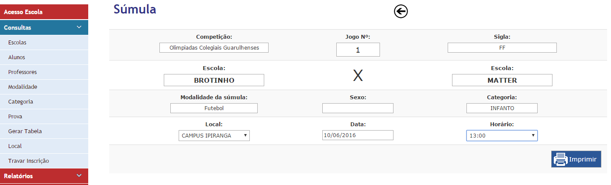
4 - Definindo Perfil de Usuário:
- Selecione dentro da aba Consulta a opção PROFESSORES.
-
Na tela de Cadastro de Usuário / Professor, haverá a opção de PERFIL DO USUÁRIO.
Esta opção estara disponível para o cadastro de NOVOS Usuários / Professores e na EDIÇÃO dos mesmos.
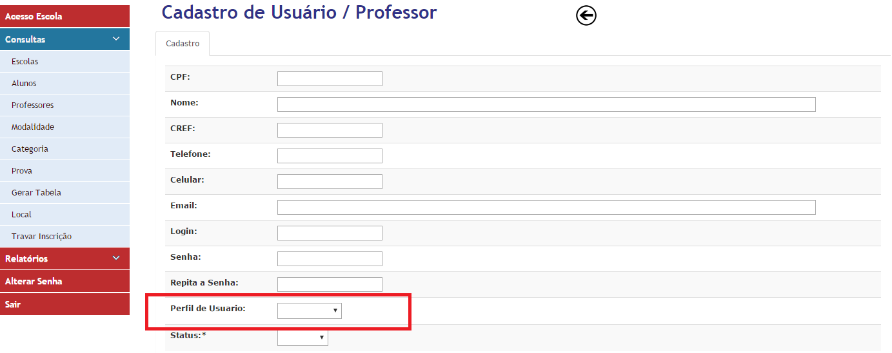
5 - Definindo a quantidade de Provas:
- Selecione dentro da aba Consulta a opção CATEGORIA.
-
Na tela de Categoria, clique em EDITAR ou em NOVO.
Abrira a tela Cadastro de Categoria, nela há a opção de estabelecer uma quantidade de provas individuais e coletivas.
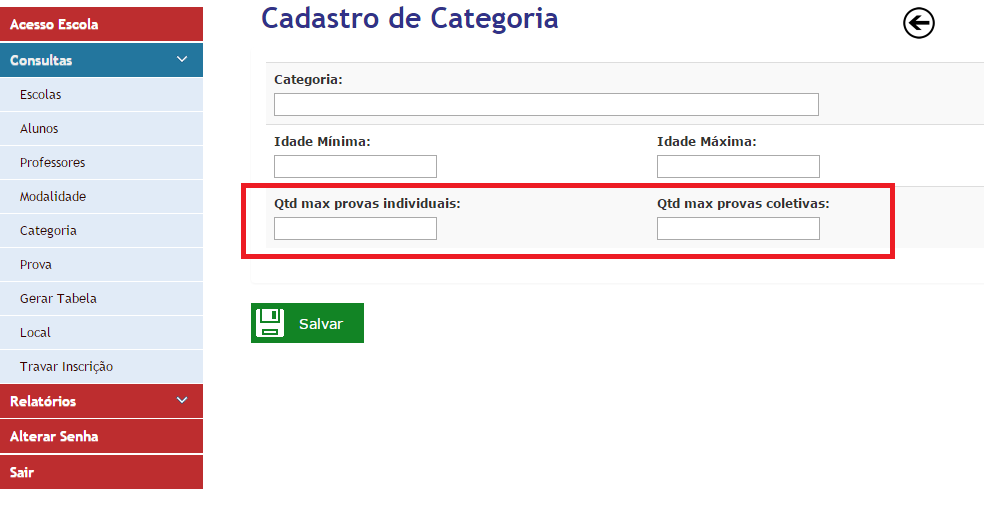
6 - Definindo a quantidade de Participantes:
- Selecione dentro da aba Consulta a opção MODALIDADE.
-
Na tela de Modalidade, clique em EDITAR ou em NOVO.
Abrira a tela Cadastro de Modalidade, nela há a opção de estabelecer uma quantidade máxima e mminima de participantes.
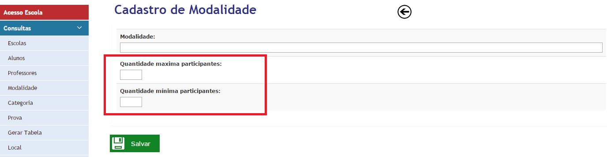